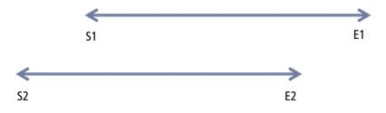

Answers
Brainstorm as many algorithms as possible for recommending Twitter followers.
CANDIDATE: Okay, give me one moment to think about this.
Candidate jots down the following:
CANDIDATE: When I mull this problem, I think of behaviors, relationships and states.
For behavior, I think about whether a Twitter user views another’s profile or if a Twitter user follows another.
I will consider two view-based relationships. If a user views the other, but the other user does not view back despite a suggestion, we’ll call that a stalker relationship. However, if both individuals view one another when suggested, it’s likely they know each other. We’ll call that an acquaintance relationship.
Lastly, for the following states, there are three scenarios I see. First, the viewer follows the one being viewed, but not the other way around. Second, the viewed follows the viewer, but not the other way around. Third, both follow the other.
To summarize, on Twitter, there are two view relationships:
Here’s a visual representation of these relationships:
| A views B | A does not view B | |
|---|---|---|
| B views A | Acquaintances | Stalker |
| B does not view A | Stalker | No relation |
We can improve the algorithm to suggest a third user C– to either user A or B – depending on A and B’s relationship to C and each other.
The table below visually represents the permutations:
| A following C | A followed by C | A acquaintance of C | |
|---|---|---|---|
| B followed by C | A >C > B | A <C > B | A <>C > B |
| B following C | A >C < B | A <C < B | A <>C < B |
| B acquaintance of C | A >C <> B | A <C <> B | A <>C <> B |
INTERVIEWIER: Okay, you’ve indicated 11 different algorithm options. Which one would you choose?
CANDIDATE: Well, I would implement all the algorithms, run A/B tests, and see which one has the best suggestion-to-follow ratio. But I believe you’re asking me to prioritize which one I would like to try first.
The one I like best is A <>C<> B. That is, if A is an acquaintance with C and B is an acquaintance with C, then it’s very likely that A and B are likely to be acquaintances too. It’s a phenomena modeled on real life. That is, assuming C knows A and B well, at some point C would introduce A and B to each other.
INTERVIEWER: Thanks for the recommendation.
Comments: Candidate was organized and exhaustive in evaluating attributes and states for a recommendation engine. The A/B test suggestion shows that he’s also objective, unbiased and willing to experiment.
Explain recursion.
CANDIDATE: Outside of work, I’ve been teaching computer programming to eighth-grade kids in East Palo Alto. Two weeks ago, I taught them a new programming concept called recursion. I introduced it with Wikipedia’s definition:
Recursion is a method where the solution to a problem depends on solutions to smaller instances of the same problem.
As you can imagine, their eyes glazed over. I could explain by writing some code below, but I don’t think it would have helped.
Candidate writes the following on the whiteboard.
unsigned int factorial(unsigned int n) {
if (n == 0) {
return 1;
} else {
return n * factorial(n - 1);
}
}
Then, I remembered an answer I read on Quora. It used a movie theater analogy to explain recursion.
Inspired by that example, I told the students,
“Let’s say you’re in a movie theater where the rows are not numbered. Someone asks you which row you’re in. You don’t want to count, so you ask the person in front of you. He doesn’t want to count either, so they ask the person in front of them.
This continues all the way to the person in the front row. That person doesn’t see anyone in front of them, so they tell the person behind them that he’s in the 1st row. The guy in the 2nd row adds 1 to his response and tells the person behind him that he’s in the 3rd row.
This continues all the way back to the person who originally asked the question.”
The example worked. The students understood the concept by affirming that the question “What row am I?” can be rephrased (recursively) as “How many people are in front of me + 1?” with a base case of zero. Some students even recognized that requests could be pushed on and off the stack. Most importantly, I was proud that the youngsters grasped a concept that many college students struggle with.
Comments: Example is a tough concept. Response shows three alternatively ways to answering. The candidate clearly demonstrates that his way was better.
Explain object-oriented programming to your grandmother.
CANDIDATE: I’ll start by answering what is object-oriented programming (OOP).
OOP organizes computer code into objects. This is different from conventional programming, where programs are just a sequence of tasks. The main idea is objects vs. tasks.
I’ll give an example. Let’s say we’re programming a racing video game. There are several different cars in the game.
We can program an object called a “car.” The car object has a state and operations:
The car’s state can include current speed, brake on and off, and steering direction.
The car’s operations can include accelerate, brake, and steer.
Let’s say the first car in the game is a Toyota. Now, if we want a BMW, we don’t need to create a brand new car from scratch. We can just derive the new BMW based on the basic car object, because the BMW, like all car objects can do three things: accelerate, brake and steer. And the BMW car can add its own special properties such as a windshield wiper that automatically adjusts its speed based on how heavy the rain is.
Why do we need OOP? There are a couple reasons why we do this. First, it saves time. If we already have a car object, we don’t need to program identical functionality multiple times. Second, the object metaphor is easy to understand. It’s easy to communicate to others the idea of creating objects and that the object is capable of doing actions that another object might not. Lastly, this programming convention keeps it organized. For example, a Ford Mustang convertible should rightly have the ability to remove the vinyl top, while the Toyota Prius should not. By limiting the vinyl top removal action to the Ford Mustang convertible object, we limit unintended actions by the Toyota Prius.
Comments: The reason the interviewer is asking this question because they want to test your understanding of technical concepts. She also wants you to prove your ability to communicate difficult concepts to different audiences. The candidate’s response is factually correct while tastefully leaving out advanced and potentially confusing details, such as encapsulation and polymorphism. It uses sufficient detail to explain the central idea around OOP, inheritance. It addresses the listener’s main objection to OOP using overriding.
How would you reduce Gmail’s storage size?
CANDIDATE: Give me a moment to brainstorm some ideas.
Candidate writes the following in his notes:
| Description | Pros | Cons | Mitigation | |
|---|---|---|---|---|
| Compression strategy 1 | Apply a compression algorithm | More space | Slower access; likely doing this already | Selectively choose messages |
| Compression strategy 2 | Concatenate files then compress | More space | Slower access | Selectively choose messages |
| Deletion | (Self-explanatory) | More space | Can’t auto delete messages, goes against Gmail marketing | Quotas, overage charge, auto-delete after X days |
| Single item storage | Keep single copy of email, images, and attachments that is included in multiple emails | More space | N/A | |
| Client-side storage | Store some emails on client machine | More space | Can’t access all messages everywhere | Selectively choose messages |
| Off-site storage | Store some emails on off-site storage | Lower cost | Slower access times | Selectively choose messages |
CANDIDATE: I’ve thought of at least 4 different ways Gmail can save storage space.
Candidate walks to the whiteboard.
CANDIDATE: Let me describe each one, and I’ll talk about the pros and cons for each.
Candidate then describes the table above, in detail.
Comments: To answer the question well, use the design framework, but skip the customer problem, personas, and prioritization. Skip directly to brainstorming solutions. The interviewer is looking for you to generate many solutions. She is also looking for rigor in your pro/con analysis. The interviewer is also evaluating the candidate’s technical understanding. Don’t forget to ask clarifying questions in the beginning.
How would you design a blogging application?
CANDIDATE: Are you asking me to develop a blogging application for the web, desktop or mobile application?
INTERVIEWER: Website.
CANDIDATE: And are you looking for the UI or something else?
INTERVIEWER: I want you to specify the data model and key functions. Then I want you to walk my through how those functions get called.
CANDIDATE: I’d start by creating the data model. There are a couple of things we would need to store:
Blog post data model
Comments data model
Then, I’d create a few functions:
I’ll walk you through how all this comes together.
Comments: This is not a particularly difficult question. It does test the candidate’s comfort level discussing technical details. The candidate does a solid job specifying the basic data model, core functions and a walk through of user input interacts with each part of the program.
You’re part of the Google Search web spam team. How would you detect duplicate websites?
INTERVIEWER: People are copying content across websites. Develop an algorithm to determine which one is the original and which one is the copied one.
CANDIDATE: Give me a moment to brainstorm some solutions.
Here are the solutions that come to mind:
Here are the pros and cons of each solution:
| Solution | Risks |
|---|---|
| Apply a hash function; subsequent ones are duplicates. | Google may incorrectly process the copied page before the original page. |
| Content with the most number of inbound links is the original. | Bad actors can setup a content farm, inflate the number of links and game the system. |
| Embed a unique ID to a page. | This would require additional work for webmasters. Also, there may not be 100 percent compliance. |
| Compare time stamps for web pages; assume the page with the earlier time stamp is the newer one. | Webmasters can fake early time stamps. |
| Domain reputation | Penalizing domains with a history of copying original content could require manual intervention, which is slow and costly. |
Given the pros and cons, I recommend that we apply the following solutions: do hash function, unique ID, and domain reputation.
Comments: The candidate generates a large number of potential solutions. The pro and con analysis is thoughtful. He concludes with a set of recommendations.
Write an algorithm that detects meeting conflicts.
CANDIDATE: Let me work through a simple example and then I’ll write the code to address any case. Let’s say the first meeting starts at 9a. m. and ends at 11a. m. The shorthand would be:
There’s a conflict if the 2nd meeting starts before 11a. m. or ends after 9a. m. Representing this in shorthand:
To help visualize this:

We can represent the (S2 < E1 or E2 > S1) logic in our code below.
bool IsConflict(Datetime s1, Datetime e1, Datetime s2, Datetime e2) {
return (s1 < e2) || (e1 > s2);
}
Comments: This is an easy algorithm question that can inspire fear into a product management candidate. As long as the candidate can calm their nerves and take a moment to understand the situation, the candidate will realize that a single one-line logic statement provides the answer.
Design an elevator control system.
INTERVIEWER: I’d like you to design a control algorithm for an elevator system.
CANDIDATE: Do you mean an algorithm for how to respond to incoming passenger requests and the corresponding elevator actions?
INTERVIEWER: Yes, that’s correct.
CANDIDATE: Sure, give me a moment to brainstorm.
Candidate pauses for 60 seconds
| Approach | Description | Analysis |
|---|---|---|
| First come first served (FCFS) | Process passengers as they arrive | Minimize latency with little regard to throughput |
| Shortest seek time first (SSTF) | Process passengers from the floor that is closest | Elevator moving time is minimized. Will have better throughput than FCFS, but request may be delayed if many closely related passengers arrive after it |
| SCAN | Visit top floor before changing direction and sweeping back to first floor | Movement time is minimized and fairer than SSTF |
| Circular SCAN (C-SCAN) | Visit top floor, don’t pick up any passengers on the way back to the 1st floor, and start picking up passengers again | Fairer performance than SCAN because middle floors don’t get serviced twice as often |
| LOOK | Similar to SCAN, elevator makes use of information about locations requested. For example, as elevator moves to the top floor, the elevator will reverse if there are no waiting requests for locations beyond the current floor. | Movement time is minimized |
| C-LOOK | Similar to LOOK and C-SCAN | Movement time is minimized with benefit of C-SCAN |
CANDIDATE: Here are some algorithms I brainstormed. I’ll explain algorithm and then discuss the pros and cons of each.
Candidate walks the interviewer through the table above
Comments: Candidate appropriately clarifies the question and then brainstorms a comprehensive list. Well done.
There’s a server bottleneck. How would you solve it?
INTERVIEWER: If you had a server (like SharePoint) in the US that stored your client’s insurance information and your colleagues wanted to access and update these docs but have been complaining about the long wait times and network disconnections, how would you approach this?
CANDIDATE: I haven’t analyzed server bottlenecks since college. Do you mind if I ask a few clarifying questions?
INTERVIEWER: Okay.
CANDIDATE: When it comes to slow response times for a SharePoint site, I can think of several causes: network, server, storage, database, application latency.
Network latency can be caused by slow or overloaded network connections at the data center or the end user’s location. A slow Internet backbone can also be the cause of network latency.
Server latency is caused by slow processors and inefficient server hardware architectures.
Storage latency is due to slow performing storage devices. Solid state drives and in-memory solutions offer higher performance.
Database (DB) latency occurs when the application makes frequent database trips. DB latency can be especially challenging when it’s being used to store binary data when DBs are meant to store relational data.
Applications are inefficiently slow if they use suboptimal data structures and poor algorithms. Applications can also be unnecessarily slow, if they run on operating systems that aren’t optimized for the latest hardware. Lastly SharePoint applications can be slow if there are deadlock scenarios.
INTERVIEWER: Thanks for your preliminary diagnosis. Let’s continue the hypothetical situation. Let’s say the IT team has ruled out network, server, storage, and application latency. They’ve isolated it to database latency. What next?
CANDIDATE: One of the options to solving the database latency is to use a different backend for SharePoint. Many companies are now using NoSQL solutions such as MongoDB to store non-relational data. Unfortunately, the last time I checked, SharePoint does not support NoSQL, even Windows Azure Tables, Microsoft’s version of NoSQL.
Another solution is to migrate SharePoint binary data into documents that are stored on a file system or SAN/NAS storage. This minimizes DB trips and DB latency.
The last suggestion I have is to utilize an in-memory distributed cache. This would alleviate database traffic with a cache system that’s optimized for read operations.
Comments: Candidate offers a comprehensive answer that indicates familiarity with server issues. One suggestion for improvement: make it sound less formal and a little more casual.